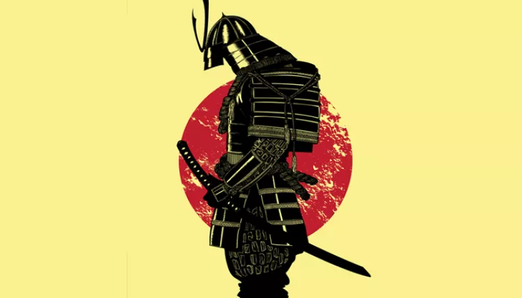

|  | Home | princípios | Referências |
Bushido é um conceito da língua japonesa que significa literalmente o caminho do guerreiro (do japonês "bushi" = guerreiro; "do" = caminho). o Bushido corresponde a um código de honra verbal que indicava como deveria ser o modo de vida dos samurais do Japão feudal, sendo ele um conjunto de regras para que o guerreiro tivesse uma vida e uma morte com honra.
Neste código a honra era extremamente importante, ao ponto de o Samurai preferir se matar através do ritual
Podemos observar que o bastidor foi fortemente influenciado por religiões asiáticas com o xintoísmo, budismo e confucionismo, como por exemplo;